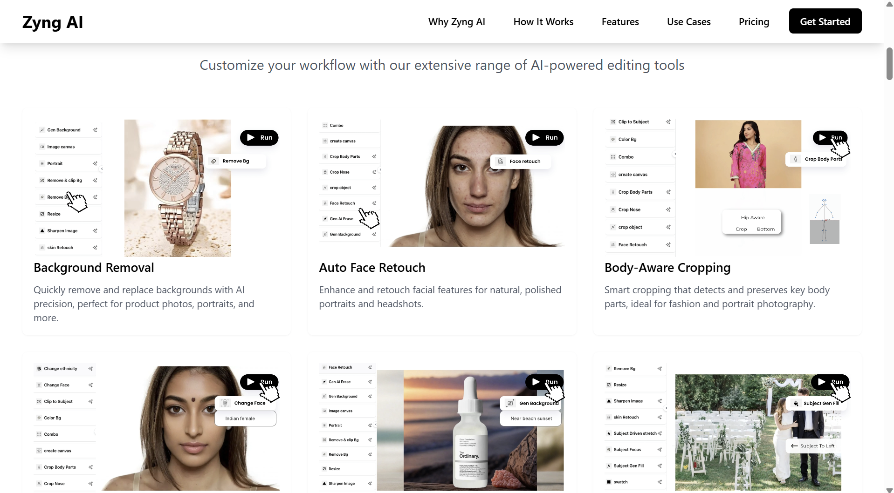

An AI image API generating 16,000 assets a day — then sold to Myntra.
Zyngai launched as a D2C tool for individual creators. The real opportunity was the B2B API. Identifying that pivot — and building the strategy to execute it — led to an acquisition.

An AI image generation tool looking for the right market.
Zyngai was built as an AI-powered image generation and editing platform — giving users the ability to create product visuals, social media assets, and marketing imagery without a design team. The initial go-to-market positioned it as a D2C tool: small business owners, independent sellers, and content creators paying a monthly subscription for a self-serve product.
I led GTM strategy and user segmentation for Zyngai, working to define who the real customer was and how to reach them at scale.
D2C acquisition was expensive. B2B demand was already there.
The D2C model had a structural problem: acquiring individual creators at meaningful volume required either paid social spend at high CAC, or organic community building at slow pace. The LTV per user was capped at the subscription price point. Growth required either dramatically lowering CAC or dramatically increasing LTV.
The segmentation analysis revealed something unexpected: a cluster of enterprise and mid-market fashion brands were using the tool at far higher volume than any individual creator — and generating far more assets per session. They were not the target customer. They were the real customer.
"The D2C users showed us the product worked. The enterprise users showed us the business."
The segmentation insight that changed the strategy
Reposition around the API, not the interface.
Enterprise fashion brands do not want a subscription to a web tool. They want an API that slots into their existing production pipeline — generating assets on demand, at volume, without a human creative bottleneck. The product was already capable of this. The packaging and positioning were not.
I built the B2B go-to-market strategy: repositioning Zyngai as an API-first product, defining the ideal customer profile (fashion and lifestyle brands running high-volume commerce campaigns), building the pricing architecture for API usage tiers, and identifying Myntra's e-commerce ecosystem as the primary enterprise channel.
16,000 assets per day. An acquisition.
The B2B pivot enabled Zyngai to reach 16,000+ assets generated per day at peak — a volume impossible under the D2C model. Enterprise clients could integrate the API directly into their campaign production pipelines, generating SKU-level imagery, size variants, and format adaptations without a creative agency.
The repositioning and traction it generated led to Zyngai being acquired by Myntra, whose scale made it the natural acquirer for an AI image infrastructure tool already embedded in fashion commerce workflows.
Your best customers are not always your intended customers.
The D2C thesis was reasonable. The segmentation data told a different story. The lesson: build instrumentation that lets you see who is actually using your product, at what volume, and for what purpose — before you optimise the funnel for your intended user and accidentally exclude the real one.
In this case, the data was the strategy. The pivot was not a creative insight. It was an observational one.